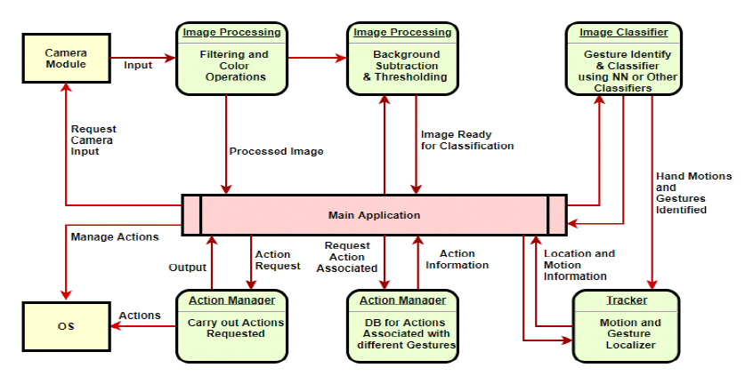
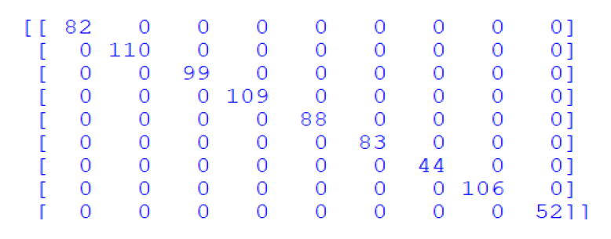
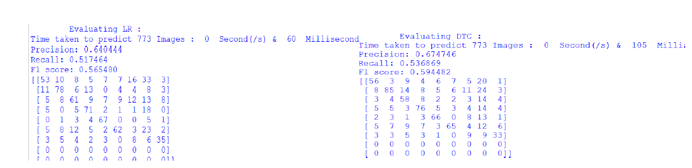
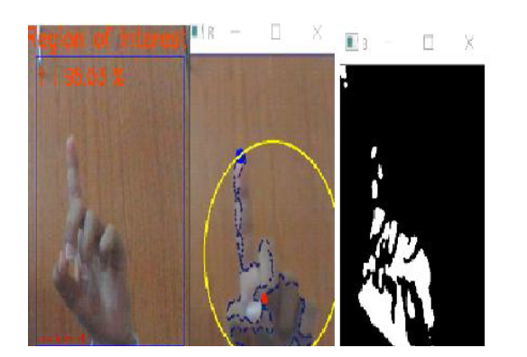

Hand Gesture Recognition Workflow

CNN Model Scalar Matrix

Linear Regression & Decision Tree Output

Gesture Prediction Example
Project information
- Category:Computer Vision / Human-Computer Interaction
- Project date: 28 May, 2021
- Project URL: : Project Link
- Paper: Link
Project Description
- Objective: To enable intuitive and contactless human-computer interaction by recognizing and classifying real-time hand gestures using a webcam and Convolutional Neural Network (CNN), allowing users to control system functions through predefined gestures.
- Designed a real-time hand gesture recognition system for human-computer interaction using webcam video feed.
- Implemented image preprocessing steps like filtering, background subtraction, and binary thresholding to isolate hand gestures.
- Used CNN (Convolutional Neural Network) for gesture classification, trained on a dataset of 700+ images for each of 9 gesture classes.
- Achieved high performance with Recall: 95.28%, Precision: 94.21%, and F1 Score: 93.46%, outperforming other models like LDA, DTC, and RF.
- Enabled system control operations using gestures such as palm, fist, 1-5, OK, and none — suitable for accessibility use cases.
- Compared model performance across CNN, LR, LDA, RF, and others to validate CNN's superior accuracy in gesture recognition.